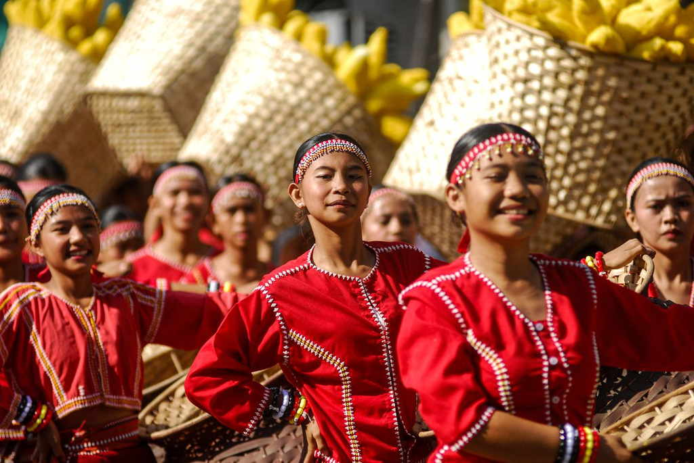
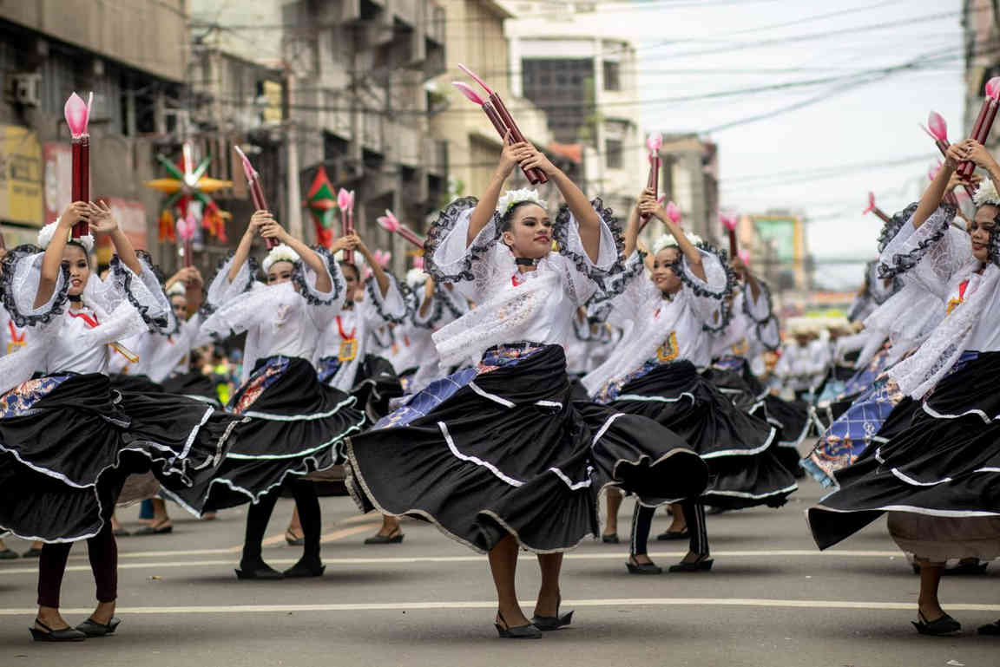

Sandurot is Dumaguete's own city festival, and for most of its history it belonged to September. That changed in 2025, when the street dancing, the showdown and a long list of contests were folded into fiesta week in late November, the days leading up to Charter Day on 24 November. Anyone planning a trip around Sandurot Festival 2026 should start from that newer pattern rather than the September dates still printed on older calendars.
As of the end of October 2026, the city has not yet released the full 2026 programme. Last year's schedule appeared only about a week before the first event, so a late announcement is normal here. What follows is a planning guide: the likely window, what the festival is about, which events to expect based on recent editions, and how to see the parade without spending the whole afternoon stuck behind a barricade.
If you only need the short answer: keep 20 to 25 November 2026 open, aim to be in the city by Friday the 20th, and treat Saturday the 21st as the most likely parade day until the official programme says otherwise.

When Is Sandurot Festival 2026?
The dates move, so it helps to see how recent editions played out. In 2023 the street dancing and showdown closed the festival on 24 September. In 2024 Sandurot ran from 12 to 30 September, with a half-marathon in the middle of the month and the street dance and showdown on 28 September. In 2025 the city shifted everything to November: the opening salvo came on 20 November, the street dancing and showdown took place on Saturday 22 November, and the week ended with Charter Day on the 24th, followed by the feast of Saint Catherine of Alexandria, the city's patron saint, on the 25th.
For 2026, Charter Day falls on a Tuesday and the feast of Saint Catherine on a Wednesday. If the city follows the 2025 layout, the parade would land on the weekend before, Saturday 21 November. That is an educated reading of the calendar, not an announcement. Watch the Dumaguete City Government website and the city tourism office's Facebook page from early November, and hold off on non-refundable bookings until the programme is out.
Charter Day itself is usually a holiday within the city, with a morning mass at the cathedral and a civic parade in the afternoon. Government offices and some businesses close, so plan errands around it.
What the Name Means
Sandurot means fellowship and reaching out. The festival looks back to the centuries before Spanish rule, when traders and settlers from different places landed on this stretch of the Negros coast and stayed. The mix of people that grew out of those arrivals is the story Sandurot tells, and it still fits a city where students, retirees and families from across the country and abroad live a few blocks from one another.
The traditional programme has three parts. Paghimamat is a re-enactment of those first arrivals, with people from different cultures coming ashore bearing their customs as gifts. Pasigarbo is the street dancing, with drum-led groups from barangays and schools moving through the streets toward Quezon Park. Pasundayag is the larger dance presentation, where contingents act out stories drawn from Dumaguete's past. Expect the names on the poster to change a little from year to year; the 2024 programme, for example, called its street dance Pasundalan.
Events to Expect in Fiesta Week
The 2025 schedule is the best guide to what 2026 might hold, since it was the first edition held during the fiesta. Treat the list below as a preview of the kinds of events, not a confirmed lineup.
Street dancing and the showdown
This is the main draw. In 2025, contingents gathered at the Looc bypass road at 2 p.m., moved through city streets from 3 p.m., and performed the showdown on Rizal Boulevard from 6 p.m. Groups come from barangays and public high schools, and the stakes are real for them: in 2023 the winners took home project funds of ₱2 million, ₱1.5 million and ₱1 million for first to third place. That money goes back into the school or barangay, which explains the months of rehearsal you see in the routines.

Festival performers often carry on to the provincial stage. Buglasan, the Negros Oriental festival of festivals, ran from 15 to 25 October this year, and Dumaguete's dance-theatre entry placed second overall. If you missed it, the Buglasan festival guide covers how that event works.
Contests, music and food on the boulevard
The 2025 week was packed. There was a dawn half-marathon on Rizal Boulevard, a bangkarera boat race off the seawall, Sandurot Eats food stalls and a trade fair near the press club, singing contests for adults, teens and children, a modern dance contest, a Dumaguete folk dance competition, a balitaw contest for the old Visayan sung debate, and a balak night for Cebuano poetry. A cook-off called Humba is the Best gave the braised pork dish its own spotlight, and a designers' contest put local clothing on a runway at the mall. Bands played Quezon Park and the boulevard most nights, and Charter Day closed with a variety show and a fireworks competition over the water.
Two practical notes. Most of these events were free to watch, though seating at indoor venues fills quickly. And the motorsport events, motocross and drag racing, were held outside the city centre, so they need their own transport.
Miss Dumaguete
The city pageant has been part of fiesta week, with the pre-pageant on the boulevard and the coronation at the Lamberto L. Macias Sports and Cultural Center. Tickets and seating rules are announced separately, so check the organisers' page if you want a seat.
How to Watch the Parade Well
Routes change, so read the 2026 traffic advisory before choosing a spot. That said, the 2025 layout gives a useful starting point. The assembly area on the Looc bypass is the place to see costumes up close before the groups set off, and it is less crowded than the boulevard. Along the route, a spot near the start gives you fresher dancers and thinner crowds. For the showdown, the boulevard fills well before 6 p.m., so claim space in the late afternoon and accept that you will be standing.
Expect road closures around the city centre from early afternoon, and plan to walk the last few blocks. Tricycles stop where the barricades start. Bring water, a small umbrella that doubles as sun cover, and nothing bulky. Late November can still bring heavy showers on Negros, so check the weather forecast that morning and be ready for delays if rain sweeps in.
Be considerate with photos. The performers are mostly students, many of them minors, so keep to wide shots of the parade, ask before close portraits, and never step into the route for a better angle.
Where to Stay and When to Book
Fiesta week brings visitors from around the province, contingent families and returning residents, so rooms near Rizal Boulevard and the city centre go first. Book once the programme confirms the parade date, and choose a rate you can change. If the centre is full, places a short tricycle ride away in Sibulan, Bacong or Dauin keep you close without paying fiesta prices, but factor in the closures when planning your trip back after the showdown.
Make More of the Trip
The festival takes up afternoons and evenings, which leaves the mornings free. Start the parade day with a slow meal from the list of breakfast spots in Dumaguete, then use a quiet morning for the Silliman University heritage walk before the crowds build. The day after Charter Day is the feast of Saint Catherine, a calmer, more religious day, and a good time to head out of the city for Valencia's waterfalls or the reefs off Dauin.
Before You Go
Sandurot works best as part of a longer stay in Dumaguete rather than a one-night dash. Keep the 20 to 25 November window flexible, wait for the official 2026 programme before paying for anything you cannot cancel, and check the city's page again the day before the parade, since times and routes can shift at the last minute. Once the schedule is out, this guide will be updated with the confirmed dates.
Sources
Festivals – Dumaguete City Government
Sandurot Festival 2025 Schedule of Activities – Dumaguete.com, 13 November 2025
36th Sandurot Festival of Dumaguete starts – Negros Now Daily, 13 September 2024
Dumaguete caps Sandurot Festival with street dancing, showdown competition – Philippine Information Agency, 29 September 2023
Dumaguete City's "Festival of Stories" at Buglasan 2026 – SunStar, 30 October 2026

Comments
No comments yet. Been here recently? Share a tip or ask a question.
Leave a Reply